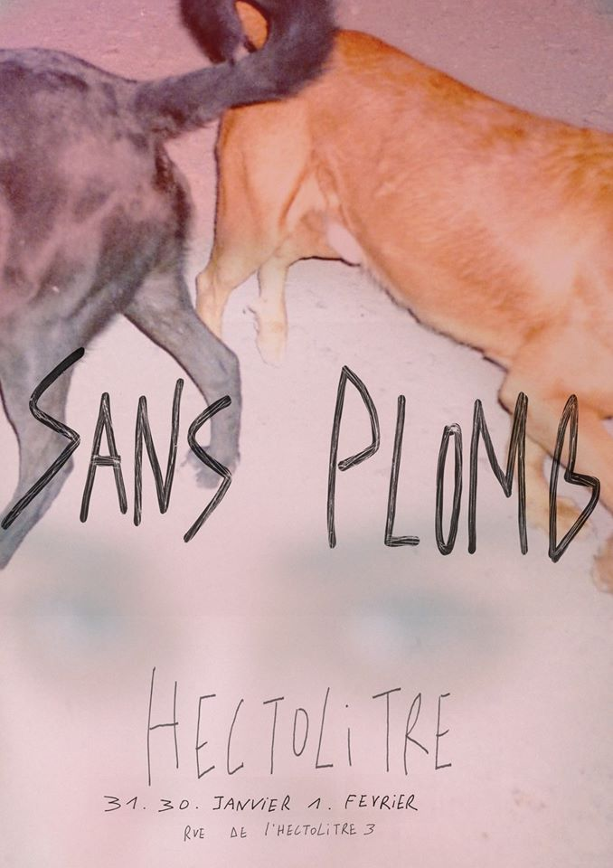

Jeudi (Thursday) 30 janvier 2020, 18h30-21h30
Une création de Justine Jaladis et Léa Quinsac

J’étais à droite dans la voie rapide - elle était divisée en quatre par des bandes blanches découpées et collées sur du gris. Le compteur d’essence lui, était rouge, quand une voix plus lente sur l’autoradio a dit «Le corps féminin est une fiction politique» puis d’autres voix ont parlées jusqu’à la station service.
J’étais dehors à coté du réservoir et les pompes d’un mauvais jaune et d’un blanc sale faisaient un peu de bruit. Une femme est sortie de la voiture d’à coté en téléphonant face à un autocollant qui disait que c’était interdit. Elle avait des nattes qui remuaient au dessus de joues assorties à son col rose vif et à sa chemise blanche. Elle disait «On est hyper naturel l’un envers l’autre, je ne joue pas de rôle. C’est la première relation où je n’ai pas l’impression d’avoir à jouer quelqu’un d’autre, tu comprends ? (...) Parfois je joue le rôle de maman, je lui rappelle toujours tout (...)»
Je me suis demandé comment étaient les gens qui parlaient dans l’autoradio un peu plus tôt, tout en avançant vers le magasin vitré de la station. Elle était remplie de voyageurs en transition. Certains, enfouis sous un sweat-shirt à capuche, se prenaient en photo accoudés à une table, où l’on aurait certainement trouvé des cafés solubles dans des gobelets en plastiques. Dans la file de la caisse, une femme brune en manteau vert dit à une autre «Non je ne combattrai pas. Je me dirai, c’est la fin, ben voila. J’aurai un certain panache. C’est important de mourir avec élégance.» La caissière me demanda le numéro de la pompe, je répondis la quatre, un plein de sans plomb 95 s’il vous plaît.
Une création de Justine Jaladis et Léa Quinsac
Conception sonore : Joseph Olivennes
Vernissage le jeudi 30 janvier 18h30-21h30
Vendredi 31 janvier et samedi 1er février 17h- 21h